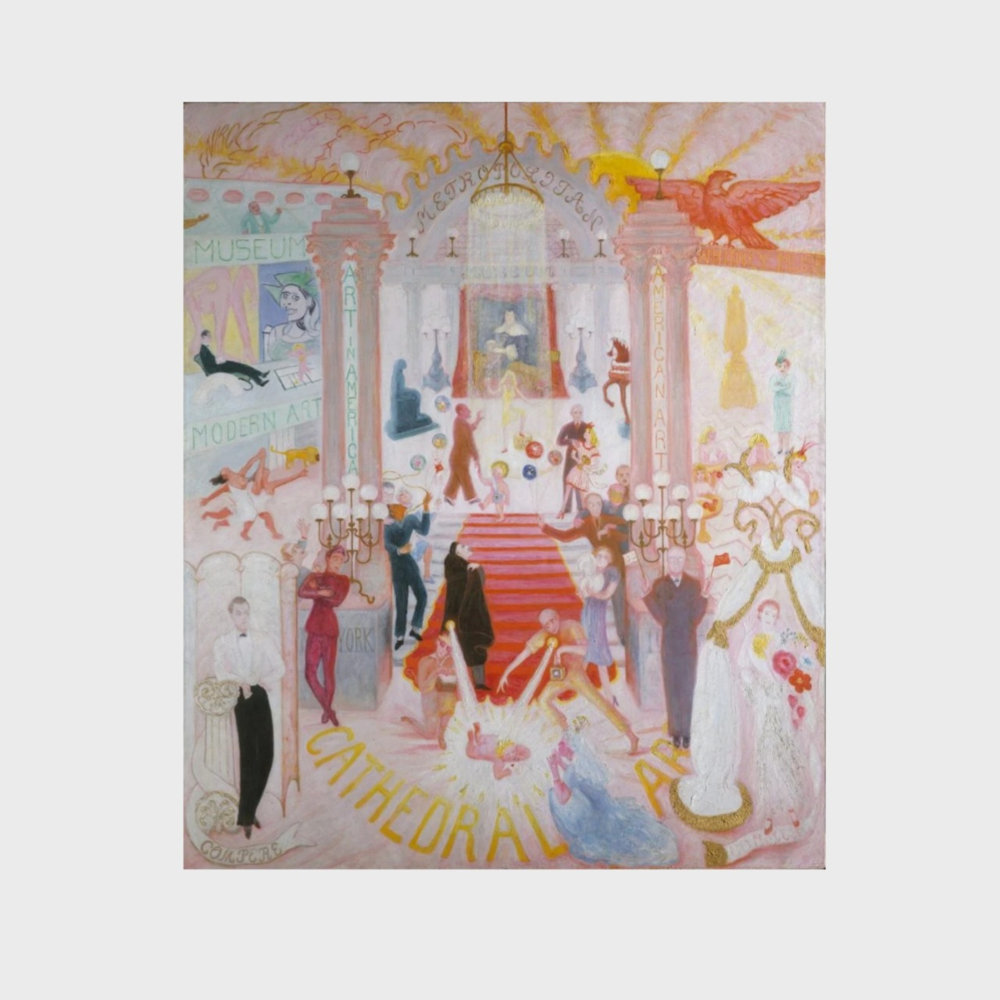

The Cathedrals of Art
"The Cathedrals of Art" (1942) de Florine Stettheimer es una obra monumental que representa el mundo del arte en Nueva York de la década de 1940, destacando las principales instituciones artísticas de la ciudad: el Metropolitan Museum of Art, el Museum of Modern Art (MoMA) y el Whitney Museum of American Art. La pintura combina figuras influyentes del arte y la crítica de esa época en un escenario fantasioso y teatral, haciendo referencia tanto a los museos como a las personas que los dirigían.
Artista: Florine Stettheimer
Año: 1942
Precio: $7,150.30
Tamaño: 120cm x 80cm